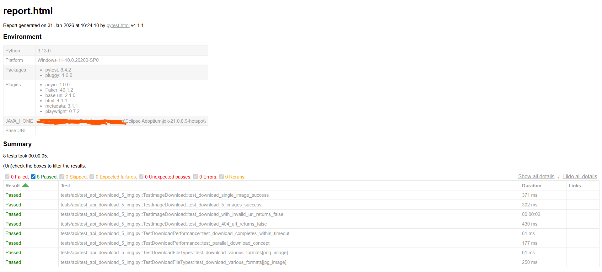

Pinterest Test Automation Framework
Project Overview
A professional automation testing framework for Pinterest built with Playwright + Pytest using the Page Object Model (POM) architecture. This framework provides comprehensive testing capabilities including login, search, and image download automation with detailed HTML reports.
HTML Test Report

Detailed HTML test report generated by pytest-html
POM
Architecture
5+
Page Objects
10+
Test Cases
Yes
Video Recording
Key Features
# Key Features of the Framework
features = {
"Architecture": [
"Page Object Model (POM) with BasePage pattern",
"Centralized locators management",
"Environment-based configuration (Local/Staging/Production)",
"Dataclass-based settings with type hints"
],
"Testing Capabilities": [
"Login flow automation",
"Search functionality testing",
"High-resolution image download",
"Parameterized test data"
],
"Reliability": [
"Fallback locator strategy (3-level cascade)",
"Smart wait mechanisms",
"Auto-screenshot on failure",
"Comprehensive error handling"
],
"Reporting": [
"HTML reports with pytest-html",
"Video recording for debugging",
"Detailed logging with emojis",
"Test markers (smoke, regression, slow)"
]
}Project Structure
Pinterest_test/
├── config/ # Configuration (settings, environment)
│ ├── __init__.py
│ └── settings.py # Environment configs, URLs, Timeouts
├── core/ # Base components
│ ├── __init__.py
│ ├── base_page.py # BasePage with common actions
│ └── logger.py # Logging utilities
├── pages/ # Page Object Models
│ ├── __init__.py
│ ├── locators.py # Centralized locators
│ ├── home_page.py # Pinterest Home Page
│ ├── login_page.py # Login functionality
│ └── search_result_page.py # Search results handling
├── tests/
│ ├── conftest.py # Pytest fixtures & hooks
│ └── ui/
│ ├── test_pinterest_search.py
│ └── test_download_5_img.py
├── utils/
│ └── pinterest_api.py # API client for downloads
├── downloads/ # Downloaded images storage
├── screenshots/ # Failure screenshots
├── logs/videos/ # Test execution recordings
└── reports/ # HTML test reportsBasePage Pattern (core/base_page.py)
from playwright.sync_api import Locator, Page, expect
from config import settings
from core.logger import log
class BasePage:
"""Base class providing common actions with built-in logging and error handling."""
def __init__(self, page: Page):
self.page = page
def open(self, url: str):
logger.info(f"🌍 Navigating to: {url}")
self.page.goto(url, wait_until="domcontentloaded")
def click(self, locator: Locator, description: str = "element", **kwargs):
"""Wrapper for click with detailed logging."""
logger.info(f"🖱️ Clicking on '{description}'")
try:
locator.click(**kwargs)
except Exception as e:
logger.error(f"❌ Failed to click '{description}': {str(e)}")
self.take_screenshot(f"fail_click_{description}")
raise e
def fill(self, locator: Locator, text: str, description: str = "field", **kwargs):
"""Wrapper for fill (auto-clears by default in Playwright)."""
logger.info(f"⌨️ Typing '{text}' into '{description}'")
locator.fill(text, **kwargs)
def is_visible_slow(self, locator: Locator, timeout: int = 3000) -> bool:
"""Wait briefly to check if element appears (for slow-loading elements)."""
try:
locator.wait_for(state="visible", timeout=timeout)
return True
except Exception:
return False
def take_screenshot(self, name: str):
"""Capture full-page screenshot for debugging."""
path = f"screenshots/{name}_{settings.get_current_timestamp()}.png"
self.page.screenshot(path=path, full_page=True)
logger.info(f"📸 Screenshot saved: {path}")Configuration System (config/settings.py)
from dataclasses import dataclass, field
from enum import Enum
from dotenv import load_dotenv
import os
import random
load_dotenv()
class Environment(Enum):
"""Supported test environments."""
LOCAL = "local"
STAGING = "staging"
PRODUCTION = "production"
@dataclass(frozen=True)
class TimeoutConfig:
"""Timeout configurations in milliseconds."""
DEFAULT_TIMEOUT: int = 30000
TYPING_TIMEOUT: int = random.randint(300, 500) # Human-like typing
SHORT13_TIMEOUT: int = random.randint(1000, 3000)
LONG_TIMEOUT: int = 60000
@dataclass(frozen=True)
class BrowserSettings:
"""Browser configurations from environment."""
HEADLESS: bool = field(
default_factory=lambda: os.getenv("HEADLESS", "false").lower() == "true"
)
RECORD_VIDEO: bool = field(
default_factory=lambda: os.getenv("RECORD_VIDEO", "false").lower() == "true"
)
VIEWPORT: Dict[str, int] = field(
default_factory=lambda: {"width": 1080, "height": 720}
)
LOCALE: str = "en-US"Fallback Locator Strategy (pages/home_page.py)
class HomePage(BasePage):
"""Page Object for Pinterest Home Page with fallback strategies."""
def search_for(self, keyword: str):
"""Perform search with smart element detection."""
logger.info(f"🔍 Searching for: '{keyword}'")
search_box = self._get_active_search_box()
search_box.click()
search_box.type(keyword, delay=settings.timeouts.TYPING_TIMEOUT)
search_box.press("Enter")
def _get_active_search_box(self) -> Locator:
"""Find search box using 3-level fallback strategy for reliability."""
import re
# Option 1: data-test-id - Primary (most stable)
box_technical = self.page.locator(Loc.SEARCH_INPUT_SELECTOR)
if self.is_visible_slow(box_technical, timeout=2000):
return box_technical
# Option 2: name attribute - Fallback 1
box_by_name = self.page.locator(Loc.SEARCH_INPUT_BY_NAME)
if self.is_visible_slow(box_by_name, timeout=2000):
logger.warning("⚠️ Primary selector failed. Using name attribute fallback.")
return box_by_name
# Option 3: Placeholder regex - Fallback 2 (multi-language support)
box_label = self.page.get_by_placeholder(
re.compile(Loc.SEARCH_PLACEHOLDER_PATTERN, re.IGNORECASE)
)
if self.is_visible_slow(box_label, timeout=2000):
logger.warning("⚠️ Using placeholder pattern fallback.")
return box_label
# All strategies failed
self.take_screenshot("search_box_missing")
raise Exception("❌ Search box not found with any strategy!")High-Resolution Image Extraction (pages/search_result_page.py)
class SearchResultPage(BasePage):
"""Page Object for Pinterest Search Results with image extraction."""
def get_image_urls(self, limit: int = 5) -> List[str]:
"""Extract high-resolution image URLs using srcset parsing."""
logger.info(f"🔍 Extracting top {limit} image URLs...")
self.wait_for_results(min_count=limit)
images = self.page.locator(Loc.PIN_IMAGE_LOADED)
urls = []
count = min(images.count(), limit)
for i in range(count):
img = images.nth(i)
srcset = img.get_attribute("srcset")
src = img.get_attribute("src")
if srcset:
# Format: "url_1x 1x, url_2x 2x, url_4x 4x"
# Extract highest resolution (last entry = 4x)
final_url = srcset.split(",")[-1].strip().split(" ")[0]
else:
final_url = src
if final_url:
urls.append(final_url)
logger.debug(f"✅ Image {i+1}: {final_url}")
logger.info(f"📝 Extracted {len(urls)} high-res URLs")
return urls
def wait_for_results(self, min_count: int = 1, timeout: int = 10000) -> int:
"""Smart wait until at least N pins are visible."""
logger.info(f"⏳ Waiting for at least {min_count} pins...")
self.page.locator(Loc.PIN_ITEM).nth(min_count - 1).wait_for(
state="visible", timeout=timeout
)
return self.get_loaded_pins_count()Test Cases (tests/ui/test_pinterest_search.py)
import pytest
from playwright.sync_api import expect
@pytest.mark.smoke
class TestPinterestSearch:
"""Pinterest search functionality test suite."""
@pytest.fixture(scope="function", autouse=True)
def setup_authenticated_state(self, login_page: LoginPage):
"""Ensure user is logged in before each test."""
logger.info("[SETUP] 🔐 Ensuring authenticated state...")
login_page.navigate()
login_page.login(settings.credentials.email, settings.credentials.password)
@pytest.mark.parametrize("keyword", [
pytest.param("Minimalist Decor", id="minimalist_decor"),
pytest.param("Cyberpunk Art", id="cyberpunk_art"),
pytest.param("4K Wallpaper", id="4k_wallpaper"),
])
def test_search_flow(
self,
home_page: HomePage,
search_result_page: SearchResultPage,
keyword: str,
):
"""Test search returns valid results for different keywords."""
home_page.search_for(keyword)
actual_count = search_result_page.wait_for_results(min_count=1)
assert actual_count > 0, f"Expected pins for '{keyword}', found 0"
logger.info(f"[TEST] ✅ Found {actual_count} pins for '{keyword}'")Image Download Test (tests/ui/test_download_5_img.py)
@pytest.mark.smoke
class TestImageDownload:
"""Test suite for downloading high-resolution images."""
def test_download_high_res_images(
self,
home_page: HomePage,
search_result_page: SearchResultPage,
api_client: PinterestAPIClient
):
"""Download 5 high-resolution images and verify file integrity."""
# 1. SEARCH
keyword = "4K Wallpaper"
home_page.search_for(keyword)
# 2. EXTRACT URLs
target_count = 5
image_urls = search_result_page.get_image_urls(limit=target_count)
assert len(image_urls) >= target_count, "Not enough images found"
# 3. DOWNLOAD
save_dir = DOWNLOAD_DIR / keyword.replace(" ", "_")
save_dir.mkdir(parents=True, exist_ok=True)
downloaded_count = 0
for i, url in enumerate(image_urls):
file_name = f"img_{i+1}_{settings.get_current_timestamp()}.jpg"
save_path = save_dir / file_name
if api_client.download_file(url, save_path):
downloaded_count += 1
# 4. VERIFY
assert downloaded_count == target_count
for file in save_dir.glob("*"):
assert file.stat().st_size > 1024, f"File too small: {file.name}"
logger.info(f"[TEST] ✅ Downloaded {downloaded_count} images to: {save_dir}")How to Run
# 1. Clone the repository
git clone https://github.com/finnvucoding/pytest-pinterest-demo.git
cd pytest-pinterest-demo
# 2. Create virtual environment
python -m venv venv
venv\Scripts\activate # Windows
# source venv/bin/activate # Linux/Mac
# 3. Install dependencies
pip install -r requirements.txt
# 4. Install Playwright browsers
playwright install chromium
# 5. Configure environment (.env file)
# PINTEREST_EMAIL=your_email@gmail.com
# PINTEREST_PASSWORD=your_password
# HEADLESS=false
# RECORD_VIDEO=true
# 6. Run tests
pytest # Run all tests
pytest --headed # Run with browser visible
pytest tests/ui/test_pinterest_search.py # Run specific test
pytest -m smoke # Run smoke tests only
pytest --html=reports/report.html # Generate HTML reportTest Markers
| Marker | Description | Command |
|---|---|---|
smoke |
Quick sanity tests | pytest -m smoke |
regression |
Full regression suite | pytest -m regression |
slow |
Slow-running tests | pytest -m slow |
api |
API tests | pytest -m api |